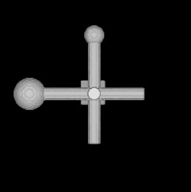

| .OPERATION: | BP 3F MERGE | ; Merge partial volumes |
| .PARTIAL VOLUME FILES TEMPLATE: | bp3fpart@* | ; Partial volumes template (input) |
| .FILE NUMBERS OR SELECTION DOC. FILE NAME: | 1-2 | ; List of partial volumes |
| .SYMMETRIES DOC FILE: | * | ; No symmetries file (input) |
| .RECONSTRUCTED VOLUME FILE: | bp3fmerge | ; Complete volume (output) |
| Input volumes (Fourier) and weighting files do not have a meaningful display. |
|---|
| MERGED OUTPUT VOLUME (Enlarged Surface view) |
|---|
|  |
| bp3fmerge |